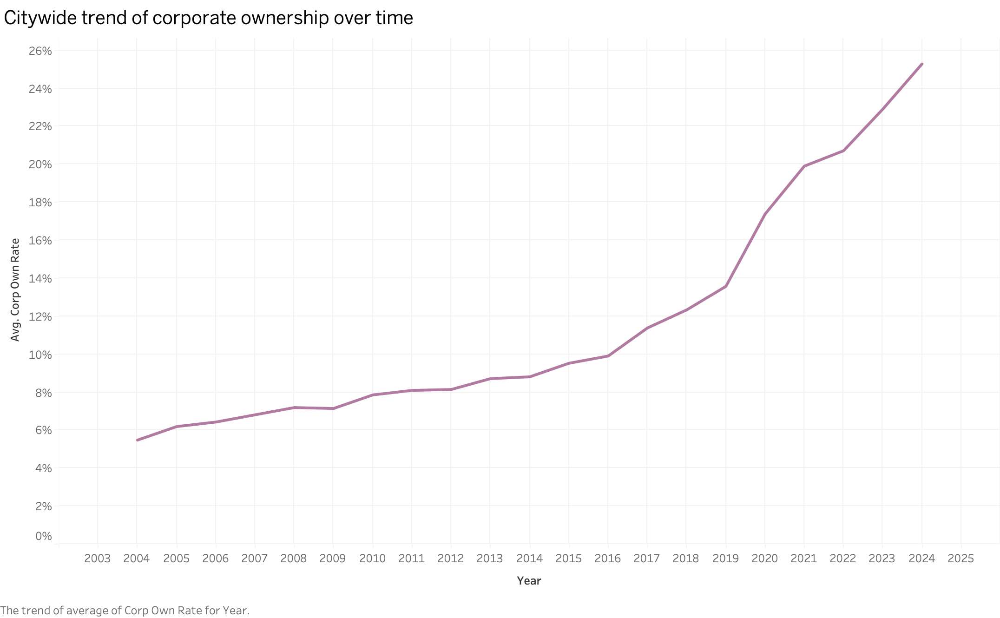
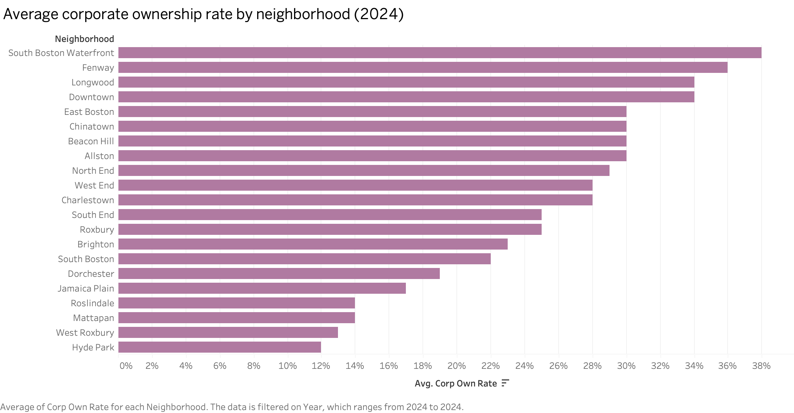
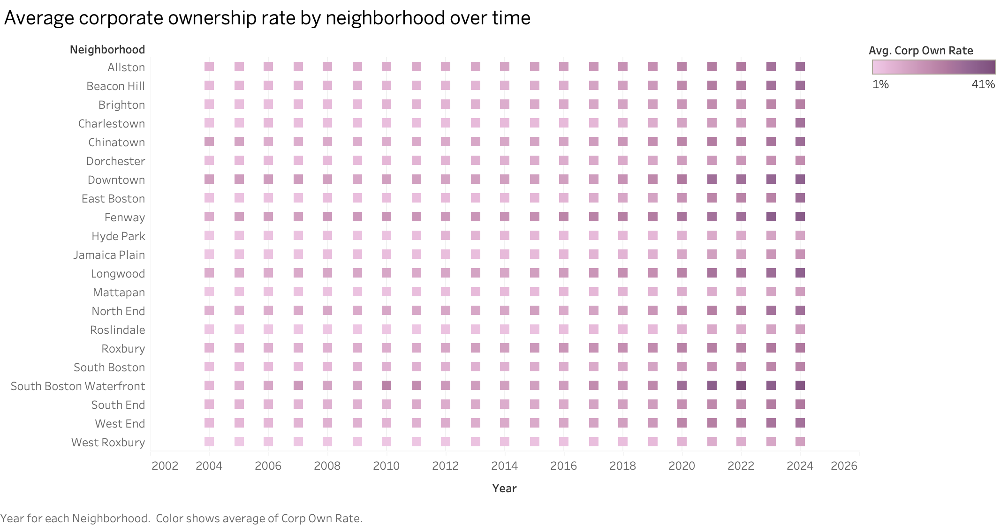
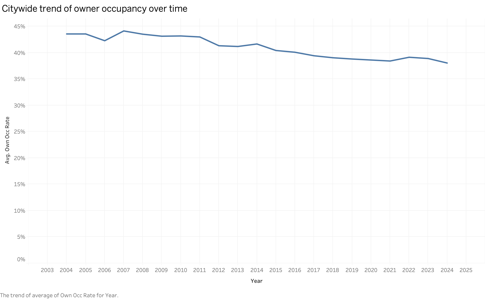
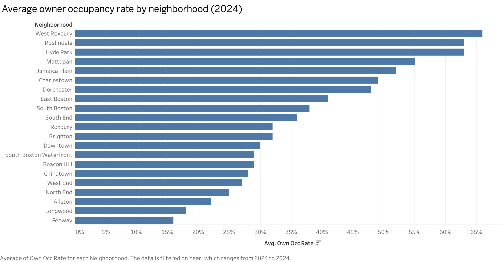
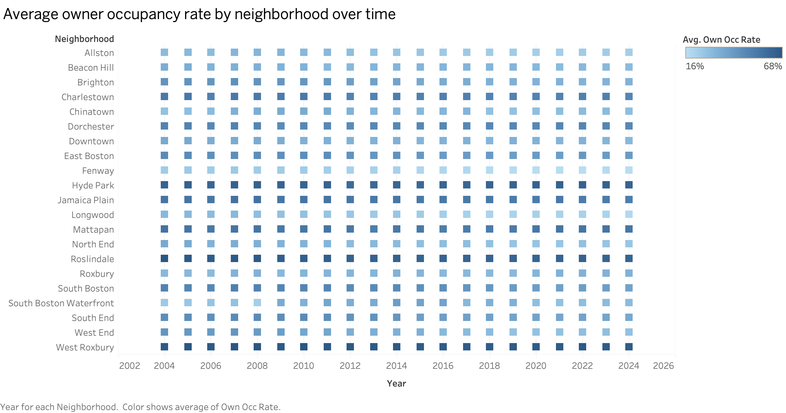
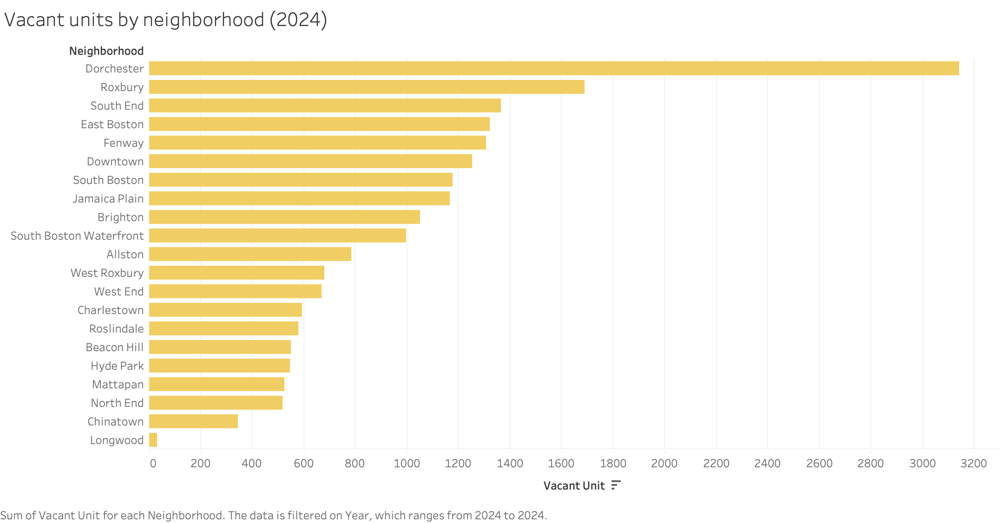
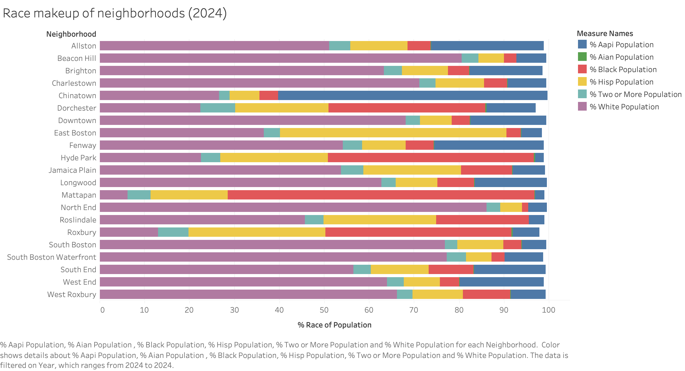
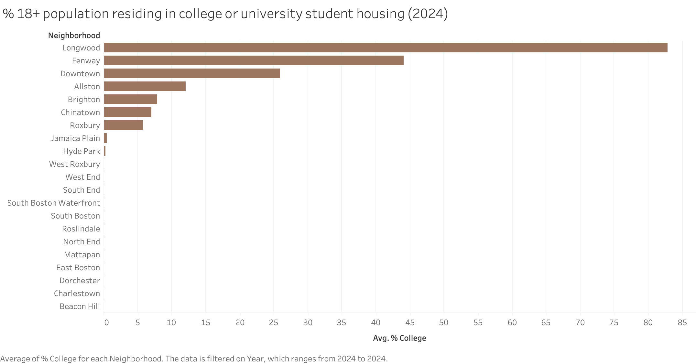
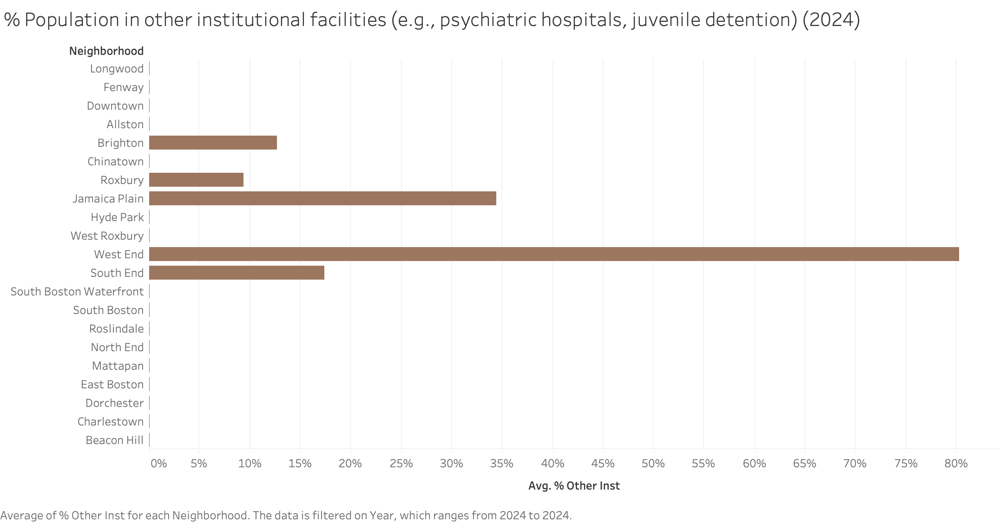

Subtheme: Corporate Landlords & Evictions
Overall Analysis Questions
- How has corporate ownership changed in Boston neighborhoods between 2004 and 2024?
- How are corporate ownership rates related to owner occupancy rates across neighborhoods?
- Which neighborhoods appear most affected by increases in corporate ownership?
Discoveries & Insights (Corporate ownership rates and owner occupancy rates in Boston neighborhoods, 2004-2024 dataset)










Summary
I examined how corporate housing ownership has evolved across Boston neighborhoods between 2004 and 2024 and looked at its connection to owner occupancy patterns. First, I found a substantial and sustained increase in corporate ownership citywide and this growth was unevenly distributed, concentrating mainly in neighborhoods with strong rental demand and institutional presence which is logical. Owner occupancy rates declined modestly, and cross-neighborhood comparisons show an inverse relationship between corporate ownership and resident homeownership. Neighborhoods like Fenway, Longwood, Downtown, and South Boston Waterfront were most affected by increases in corporate ownership, while traditionally residential neighborhoods including West Roxbury and Roslindale stayed comparatively stable. I looked at these next to additional contextual indicators, like student populations and housing vacancy levels.